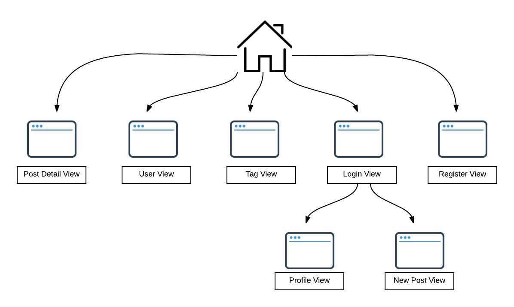

Application Flow
The diagram below represents the different views that are available in the application.
Most views are public except for the Profile View and the New Post view which require a user to be logged in.
From the Home Page, a user can navigate to the Login and Register pages using the tabs available in the Navigation menu.
When the author of a post is clicked, the user details view is displayed. If a tag is clicked, all posts belonging to that tag will be displayed.
When the post link is clicked, if the content of the post is a direct link, the link opens up in a new page. If the post content is not a link, the Post details view is displayed.
When the Comments link is clicked, the Post Details view with the comments will be displayed.
